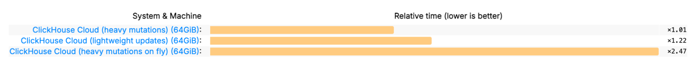
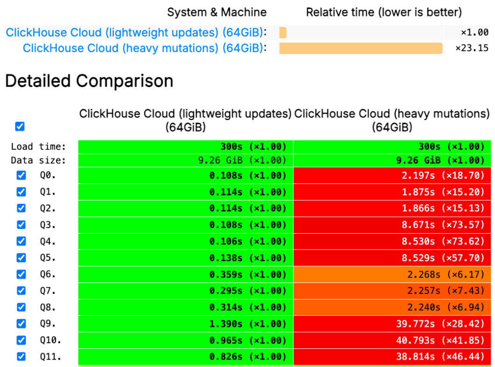

1. (50 min) What's new in ClickHouse 25.7.
1. (5 min) Guest Talk.
3. (5 min) Q&A.
ClickHouse Summer Release.
— 27 new features 🌺
— 26 performance optimizations 🍦
— 98 bug fixes 🐞
:) SELECT * FROM system.formats WHERE name = 'JSONEachRow'
Row 1:
──────
name: JSONEachRow
is_input: 1
is_output: 1
supports_parallel_parsing: 1
supports_parallel_formatting: 1
is_tty_friendly: 1
content_type: application/x-ndjson; charset=UTF-8
supports_random_access: 0
has_schema_inference: 1
has_external_schema: 0
prefers_large_blocks: 0
supports_append: 0
supports_subsets_of_columns: 1
Demo.
Developer: Alexey Milovidov.
— financialInternalRateOfReturn (IRR)
— financialInternalRateOfReturnExtended (XIRR)
— financialNetPresentValue (NPV)
— financialNetPresentValueExtended (XNPV)
Demo.
Developer: Joanna Hulboj.
Since 21.4:
— polygonsIntersectionCartesian
— polygonsIntersectionSpherical
— calculate the intersection and return it as a MultiPolygon.
Since 25.7:
— polygonsIntersectCartesian
— polygonsIntersectSpherical
— check if polygons intersect and return 0 or 1.
Developer: Paul Lamb.
:) SELECT [[(0, 0), (0, 1), (1, 1), (1, 0)]]::Polygon AS poly,
wkt(poly), hex(wkb(poly))
Row 1:
──────
poly: [[(0,0),(0,1),(1,1),(1,0)]]
wkt(poly): POLYGON((0 0,0 1,1 1,1 0,0 0))
hex(wkb(poly)): 010300000001000000040000000000000000000000000000000000000
00000000000000000000000000000F03F000000000000F03F000000000000F03F00000000
0000F03F0000000000000000
wkb — write a geometry data in "Well-Known Binary" format.
Developer: Konstantin Vedernikov.
Conversions between sRGB and OKLCH:
— colorOKLCHToSRGB((l, c, h), gamma)
— colorSRGBToOKLCH((r, g, b), gamma)
OKLCH — perceptually uniform color space.
Useful for: doing arithmetic on colors, blending colors, generating gradients, programmatically choosing colors.
Demo.
Developer: Kirill Kopnev.
In clickhouse-client.
Demo
Developer: Konstantin Bogdanov.
A set of functions to create and manipulate Bit-Sliced Indices (BSI)
— compressed representation of sparse vectors of numbers
(maps from UInt8/16/32 index to a number)
Build the index with aggregate function:
SELECT groupNumericIndexedVectorState(idx, val)
Build the index from a map: numericIndexedVectorBuild(map)
numericIndexedVectorToMap, numericIndexedVectorCardinality, numericIndexedVectorAllValueSum, numericIndexedVectorGetValue, numericIndexedVectorPointwiseAdd/Subtract/Multiply/Equal/Less/...
Applications: calculating metrics for A/B testing experiments in Tencent.
Developer: FriendLey.
A set of functions to create and manipulate Bit-Sliced Indices (BSI)
— compressed representation of sparse vectors of numbers
(maps from UInt8/16/32 index to a number)
Applications: calculating metrics for A/B testing experiments in Tencent.
Demo.
Developer: FriendLey.
In 25.6 and before:
GRANT S3 ON *.* TO user
In 25.7:
$ cat config.d/read_write_grants.yaml
access_control_improvements:
enable_read_write_grants: true
GRANT READ, WRITE ON S3 TO user
Allows for limiting reads or writes to external data sources
such as S3, URL, File, etc.
Developer: Artem Brustovetskii.
SET param_username = 'test123';
CREATE USER {username:Identifier};
Developer: Diskein.
If a query contains only count() aggregate function,
it will use an optimized code path.
Example:
SELECT RegionID, count()
FROM hits
GROUP BY RegionID
ORDER BY count() DESC LIMIT 10
25.6: 42 ms, 2.39 billion rows/s. 25.7: 32 ms, 3.11 billion rows/s.
Developer: Amos Bird.
$ cat config.d/logger_async.yaml
logger:
async: true # This is the default in 25.7, but can be disabled
Logging no longer blocks for writing, which improves the speed when logging to terminal, or to a slow disk, especially for short queries.
clickhouse-benchmark --query "
SELECT count() FROM hits WHERE AdvEngineID != 0"
25.6: 225 QPS, 14.5 billion rows/sec. 25.7: 255 QPS, 16.4 billion rows/sec.
Developer: Raúl Marín.
Low-level optimizations for hash join:
— optimizations for RIGHT and FULL JOIN
— optimizations for JOIN with multiple conditions with OR
— optimizations to make INNER JOIN as fast as the IN operator
— more precise memory allocations for the result
Developer: Nikita Taranov.
When inserting from Distributed table to another Distributed table on the same cluster, both the SELECT and INSERT pipeline will be run in parallel on all machines.
If enable_parallel_replicas is set, when inserting from Replicated table to another Replicated table on the same cluster, it will be parallelized across the machines as well.
Developer: Igor Nikonov.
Full-featured UPDATE statement:
UPDATE my_table
SET col1 = val1, col2 = val2, ...
WHERE condition
UPDATE hits SET Title = 'Updated Title'
WHERE EventDate = today();
UPDATE wikistat SET hits = hits + 1, time = now()
WHERE path = 'ClickHouse';
Developer: Anton Popov.
Supported for MergeTree, ReplacingMergeTree, CollapsingMergeTree,
including Replicated tables.
CREATE TABLE hits
(...) ENGINE = MergeTree
SETTINGS enable_block_number_column = 1,
enable_block_offset_column = 1;
SET allow_experimental_lightweight_update = 1;
Developer: Anton Popov.
Performance of an UPDATE is similar to
INSERT SELECT with the same columns and conditions.
UPDATE creates a patch part referencing the modified records.
Patch parts are applied on read and during background merges.
SELECTs performance after an update:
Two times faster than on-the-fly mutations.
Only 20% overhead compared to fully updated data.
Developer: Anton Popov.
Performance of UPDATEs:
Bonus:
SET lightweight_delete_mode = 'lightweight_update';
Developer: Anton Popov.
CREATE TABLE iceberg_table_s3 ENGINE = IcebergS3(...);
INSERT INTO iceberg_table_s3 VALUES (...);
Since version 25.7, we support inserts into existing Iceberg tables!
Demo
In the next releases:
— creating new Iceberg tables;
— creating Iceberg tables in data-lake catalogs;
— background merges for Iceberg.
Developer: Konstantin Vedernikov.
Support for schema evolution with complex data types.
Developer: Konstantin Vedernikov.
Support for compressed metadata.json files.
Developer: Alexander Sapin.
Reading data files by column ids to support renamed columns.
Developer: Konstantin Vedernikov.
Since version 25.7, ClickHouse works with
Databricks-managed Iceberg tables.
CREATE DATABASE unity_iceberg_preview
ENGINE = DataLakeCatalog('https://dbc-0514751c-5c15.cloud.databricks.com/
api/2.1/unity-catalog/iceberg-rest')
SETTINGS catalog_type = 'rest', catalog_credential = '...',
warehouse = '...', oauth_server_uri = '...',
auth_scope = 'all-apis,sql'
Demo
ClickPipes supports logging of errors into system tables
Confluent Cloud now has a fully managed connector ClickHouse connector
Kafka Connect introduced support for JSON data type
Airbyte ClickHouse destination v2 released
MySQL CDC in ClickPipes is in public beta
— 🇯🇵 Tokyo, July 29
— 🇮🇩 Jakarta, Aug 6
— 🇰🇷 Seoul, Aug 7
— 🇵🇭 Manila, Aug 13
— 🇮🇱 Tel Aviv, Sept 9
— 🇦🇪 Dubai, Sept 16
— How we built fast UPDATEs in ClickHouse;
— Customer stories: OpenAI, Anthropic, Tesla
— ClickHouse's secure remote MCP server
— How we made MySQL CDC
— LLM observability with ClickHouse
— Agentic analytics with Pydantic